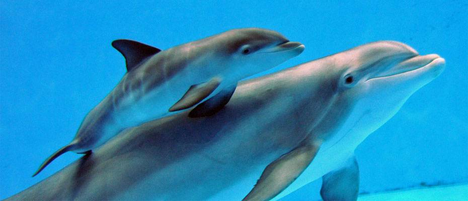

 Delfine sind Zahnwale, die ihr ganzes Leben im Meer verbringen. Sie haben eine ideale Körperform, um sich im Wasser schnell fortzubewegen und haben kaum Haare und keine Hinterbeine. Ihre Vorderbeine sind zu Brustflossen umgebildet. Mit seinem kräftigen Schwanz schlägt er auf und ab und schwimmt dadurch vorwärts. Wie bei allen Walen ist beim Delfin die Schwanzflosse waagerecht. Zum Steuern benutzt der Delfin seine Brustflossen und die Rückenflosse. Delfine werden auch "Tümmler" genannt. Der Delfin hat Lungen wie ein Mensch, er muss also regelmäßig an die Wasseroberfläche, um durch seine Atemöffnung oben am Kopf Luft zu holen. Delfine können bis zu einer Stunde unter Wasser bleiben und viele hundert Meter tief tauchen. Delfine sind sehr gute Schwimmer und legen knapp 30 km pro Stunde zurück. Nachgewiesen sind für den Delfin (Delphinus delphis) Geschwindigkeiten bis 46 Stundenkilometer. Es gibt auch Angaben von bis zu 110 km/h. Der Rücken ist dunkelbraun bis dunkelblau gefärbt, der Kopf ist blasser mit einem deutlich abgesetzten Kiefer. Der Bauch ist weiß. Auffällig ist das schnabelförmige Maul. Delfine haben wie die anderen Zahnwale lauter gleichartige spitze Zähne, mit denen sie gut Fische fangen und festhalten können. Der größte Delfin ist der Schwertwal. Delfine fressen Krebse und kleinere Fische. Delfine leben in Gruppen („Delfinschulen“) zusammen. Sie suchen gemeinsam Nahrung (Krebse und kleinere Fische) und spielen miteinander. Sie haben sogar eine eigene Sprache aus Knacken, Quietschen und Pfeifen, mit der sie sich genau verständigen können. Die meisten Töne der Delfinsprache sind so hoch, dass wir Menschen sie nicht hören können. Delfine können fünfmal so gut wie und Hund und zehnmal so gut wie ein Mensch hören. Wenn ein Delfin in Gefahr ist, kann er über weite Entfernungen andere Delfine rufen. Delfine können sich mit Hilfe von Echos orientieren. Sie stoßen Töne aus, die von Hindernissen oder Tieren als Echo zurückgeworfen werden. Der Delfin kann am Echo erkennen, wie groß das Hindernis ist und ob es sich bewegt. Delfine leben in allen Meeren. Den Sommer verbringen sie in kälteren Gewässern, im Winter schwimmen sie in wärmere Gewässer, wo sie ihre Jungen zu Welt bringen. Delfinbabies werden nach einer Tragzeit von etwa 1 Jahr geboren. Bei seiner Geburt ist das Baby fast halb so groß wie seine Mutter. Es muss gleich nach der Geburt an die Wasseroberfläche um zu atmen. Die Mutter hilft dem Baby zusammen mit anderen weiblichen Delfinen dabei und stößt es mit der Schnauze nach oben. Delfinbabies trinken an den Zitzen ihrer Mutter Milch. Da sie unter Wasser nicht saugen können, wird die Milch ihnen aus der Zitze ins Maul gespritzt. Wenn eine Delfinmutter sich Nahrung sucht, passen die anderen Delfinweibchen (man sagt auch "Kühe") auf das Baby auf. Delfine gehören zu den intelligentesten Säugetieren. In griechischen und römischen Legenden aus dem Altertum, aber auch in Berichten aus der Gegenwart wird erzählt, dass sie Artgenossen, aber auch Menschen halfen, die in Not waren. Delfine sind in der Lage innerhalb kurzer Zeit Kunststücke zu erlernen. Auch können sie Kunststücke zeigen, bei denen sie ihre Bewegung mit anderen Delfinen koordinieren müssen. Delfine lassen sich zähmen und an den Menschen gewöhnen. Daher werden Delfine auch zur Therapie von verhaltens- oder bewegungsgestörten Kindern eingesetzt. Leider werden Delfine wegen ihrer Fähigkeiten oft in Gefangenschaft gehalten, dies ist meistens nicht gut für die Delfine. Sie brauchen viel mehr Platz zum Schwimmen und viel mehr Abwechslung und Gesellschaft mit vielen anderen Delfinen.